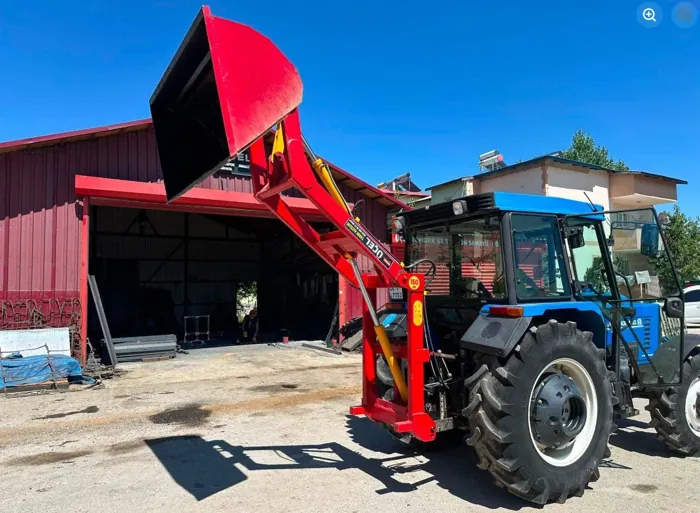

Göksun / Kahramanmaraş · İmalat ve satış
Göksun'da üretiyoruz. Türkiye'ye ulaştırıyoruz.
Traktörünüze uygun tarım aletini seçin, fiyatı WhatsApp'tan hemen alın.
Römork, kültivatör ve loader kepçeyi Göksun Sanayi Sitesi'ndeki atölyemizde kendimiz üretiyoruz. Tapan, pulluk, gübre serpme makinesi, su tankeri, ikinci el ve yedek parça da bizde.
- Kendi imalatımızGöksun atölyesinde
- Türkiye genelinegönderim
- İkinci el ve takasalım · satım
- Her gün açığız08:00 – 19:00
Ürünlerimiz
Ne arıyorsunuz?
Ürüne dokunun; modelleri, fotoğrafları ve fiyat formunu görün.
 Tarım RömorkuYük, yem, odun taşıma · kendi imalatımız
Tarım RömorkuYük, yem, odun taşıma · kendi imalatımız
 Yaylı KültivatörPulluktan sonra toprağı inceltir · kendi imalatımız
Yaylı KültivatörPulluktan sonra toprağı inceltir · kendi imalatımız
 Loader KepçeGübre, yem, malzeme yükleme · kendi imalatımız
Loader KepçeGübre, yem, malzeme yükleme · kendi imalatımız
 TapanEkim öncesi tarlayı düzler, kesek kırar
TapanEkim öncesi tarlayı düzler, kesek kırar
 PullukEkim öncesi derin toprak işleme
PullukEkim öncesi derin toprak işleme
 Gübre SerpmeKimyasal ve organik gübreyi dengeli dağıtır
Gübre SerpmeKimyasal ve organik gübreyi dengeli dağıtır
 Su TankeriTarla sulama ve hayvan suyu
Diğer ürünlerMibzer · Çayır biçme · Yedek parça · İkinci elTümünü gör →
Su TankeriTarla sulama ve hayvan suyu
Diğer ürünlerMibzer · Çayır biçme · Yedek parça · İkinci elTümünü gör →
Fiyat
Fiyatı nasıl alırsınız?
- Ürünü seçinYukarıdan ihtiyacınız olan ürüne dokunun.
- Kısa formu doldurunTraktörünüzü, beygir gücünü ve ilinizi yazın. Bilmediğinizi boş bırakın.
- Fiyatı WhatsApp'tan iletelimMesajınız hazır açılır, siz sadece gönderin. Size uygun modeli ve güncel fiyatı yazalım.
Emin değil misiniz?
İşinizi söyleyin, ekipmanı birlikte bulalım
Neden Üçel?
Baba oğul, aynı emek
Babanın yanında öğrenilen meslek, yıllar içinde kazanılan tecrübeyle bugün Göksun'daki atölyemizde sürüyor.
Kendi imalatımız
Römork, kültivatör ve loader kepçeyi kendimiz üretiyoruz. Ürünlerimizin üzerinde ÜÇEL · GÖKSUN yazar.
İhtiyaca göre üretim
Kendi imal ettiğimiz ekipmanlarda ihtiyacınıza göre özel ölçü yapabiliyoruz.
Sahadan gelen tecrübe
Tarım makinelerinin yalnızca satışını değil, sahada nasıl kullanıldığını da biliyoruz.

İkinci el ve takas
Eski aletinizi değerlendirelim
İkinci el tarım aleti alıp satıyoruz; kullanmadığınız aletinizi yeni ya da ikinci el bir ekipmanla takas edebiliriz. Her ikinci el ekipmanın gerçek durumunu dürüstçe paylaşıyoruz.
Sahadan
Atölyeden tarlaya
Sık sorulanlar
Merak ettikleriniz
Fiyatları nasıl öğrenirim?
Ürün sayfasındaki kısa formu doldurun; traktörünüzü ve ilinizi yazdığınız mesaj WhatsApp'ta hazır açılır. Güncel fiyatı ve size uygun modeli iletelim. Fiyatlar ebat, kapasite ve modele göre değişir.
Traktörüme uygun ekipmanı nasıl seçebilirim?
Traktörünüzün modelini, beygir gücünü ve yapacağınız işi bize anlatın; birlikte size uygun ekipmana bakalım.
Göksun dışına satış yapıyor musunuz?
Evet, Türkiye geneline gönderim yapıyoruz. Nakliyeyi genellikle anlaşmalı kargo/nakliye firmaları üzerinden sağlıyoruz; bulunduğunuz şehri ve ürünü belirtirseniz size en uygun nakliye seçeneğini birlikte belirleriz.
Ürünler özel ölçüde üretilebilir mi?
Evet, kendi atölyemizde imal ettiğimiz römork, kültivatör gibi ekipmanlarda standart ölçülerin dışında ihtiyacınıza göre özel imalat da yapabiliyoruz.
Yedek parça satıyor musunuz?
Evet, sattığımız ve sık kullanılan ekipmanlar için yedek parça bulunduruyoruz. İhtiyacınızı bize iletin, uygunluğuna bakalım.
Tarım aletlerinin bakım ve onarımını yapıyor musunuz?
Genel bir bakım/onarım servisimiz yok. Kendi ürettiğimiz ve sattığımız ürünler için yedek parça sağlıyor, teknik konularda elimizden geldiğince yönlendiriyoruz.
Ürünlerde garanti var mı?
Resmî bir garanti belgesi sunmuyoruz; ancak imal ettiğimiz ve sattığımız her ürünün arkasında duruyoruz. Bir sorun yaşarsanız bizi arayın ya da WhatsApp'tan yazın, birlikte çözüm bulalım.
İkinci el ürünlerde durum ve garanti bilgisi nasıl?
İkinci el ürünlerde resmî bir garanti belgesi sunmuyoruz; elimize gelen her ekipmanı kontrol ediyor, gerçek durumunu (çalışır durumda mı, eksik parça var mı vb.) dürüstçe paylaşıyoruz.
İletişim
Atölyemize bekleriz
- Adres
- Yeni Mah., Göksun Sanayi Sitesi, 46660 Göksun / Kahramanmaraş
- Telefon / WhatsApp
- 0532 480 30 51
- Çalışma saatleri
- Her gün 08:00 – 19:00
- Yetkili
- Bahadır Kocabaş
Kataloğu telefonda aç · Kataloğu indir (PDF) · İletişim sayfası